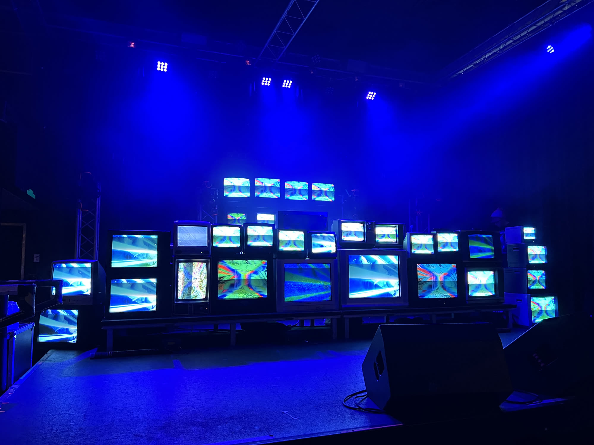

48 pieces
Live coded video synthesis. The Dual Signal series plus older work, all running natively in the browser rather than embedded from somewhere else.
I make generative video by typing at a synthesizer while it runs. Everything on this page is drawing itself right now.
I am Tristan Bridges, a full-stack developer and creative coder based in Minneapolis. I build custom software at Soto Digital and spend the rest of my time making generative video with hydra-synth.
Most of the work here is feedback. An oscillator gets folded back into itself and modulated until it stops looking like math and starts behaving like broadcast equipment coming apart. The Dual Signal series is twenty of those, built around two signals arguing across a center axis, with the gates and thresholds opened by whatever the room sounds like.
Before software I spent a couple years in a research lab in San Diego and published a paper in 2022. The habits carried over. Almost every piece here is one variable moved at a time, run until it does something I did not plan.
